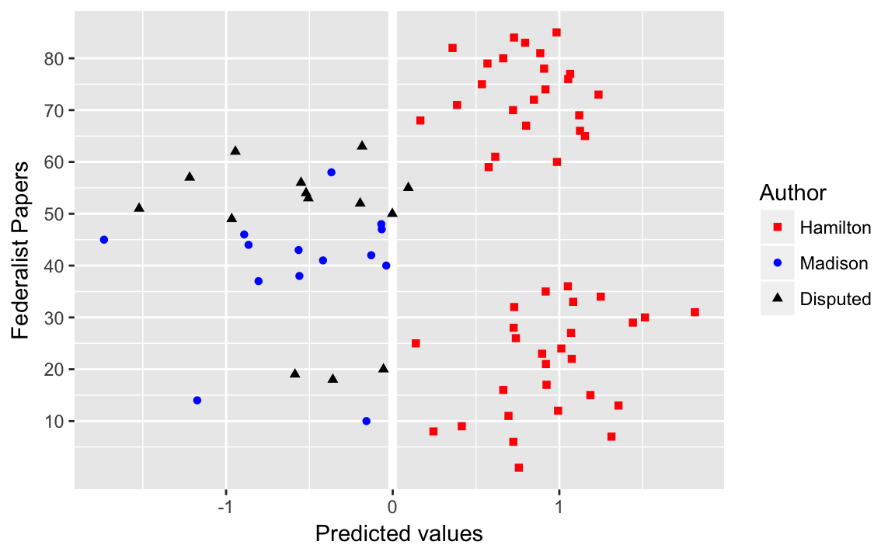
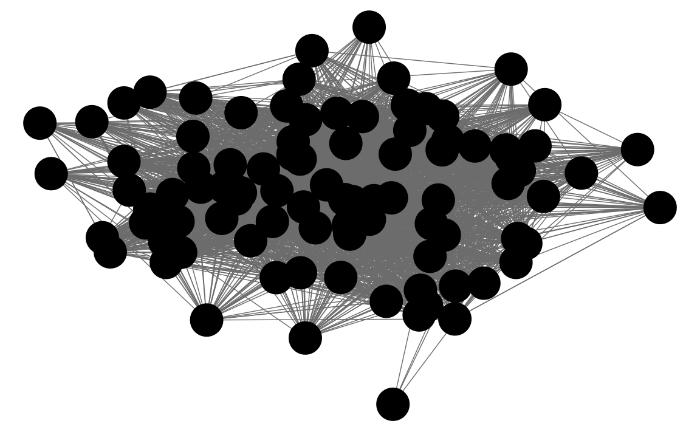
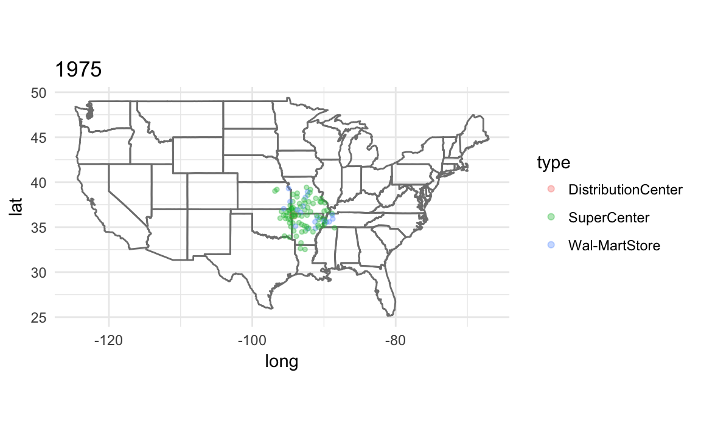
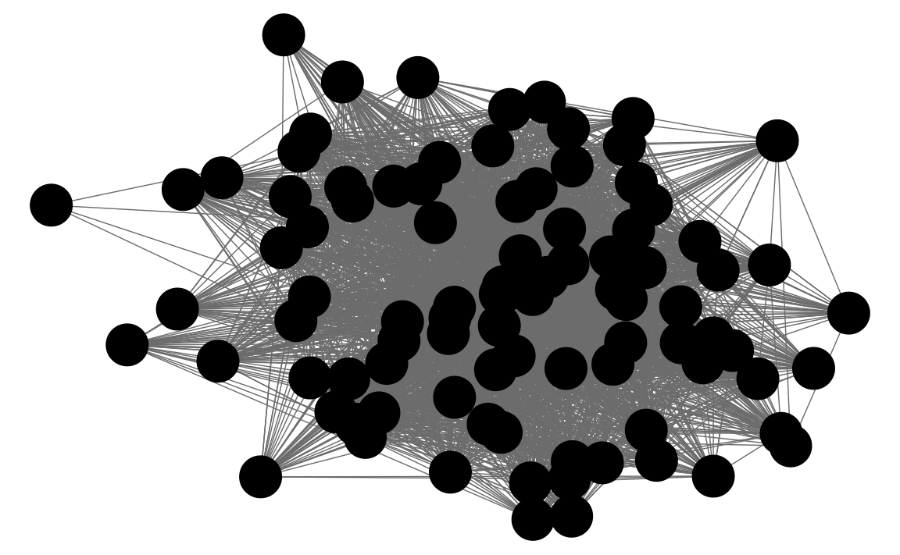
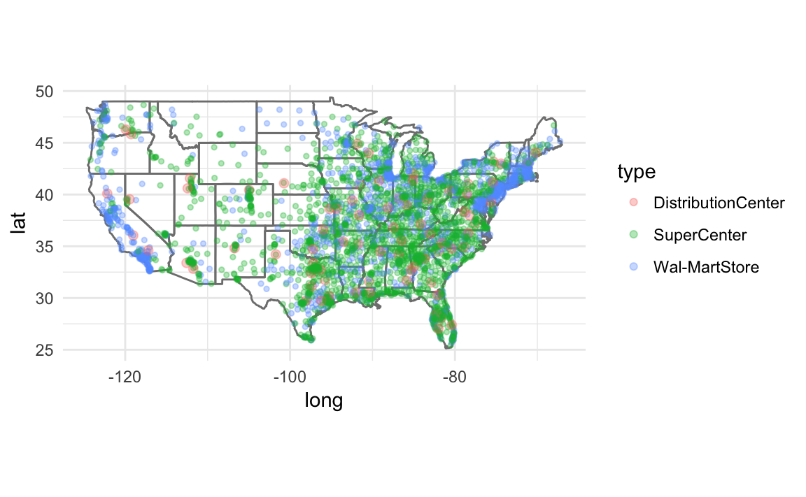
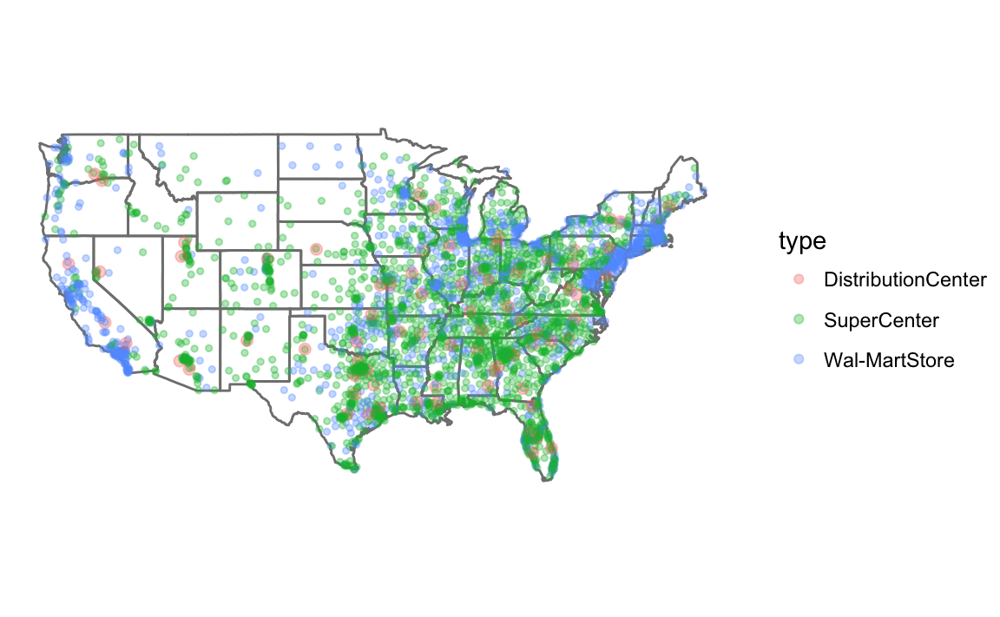
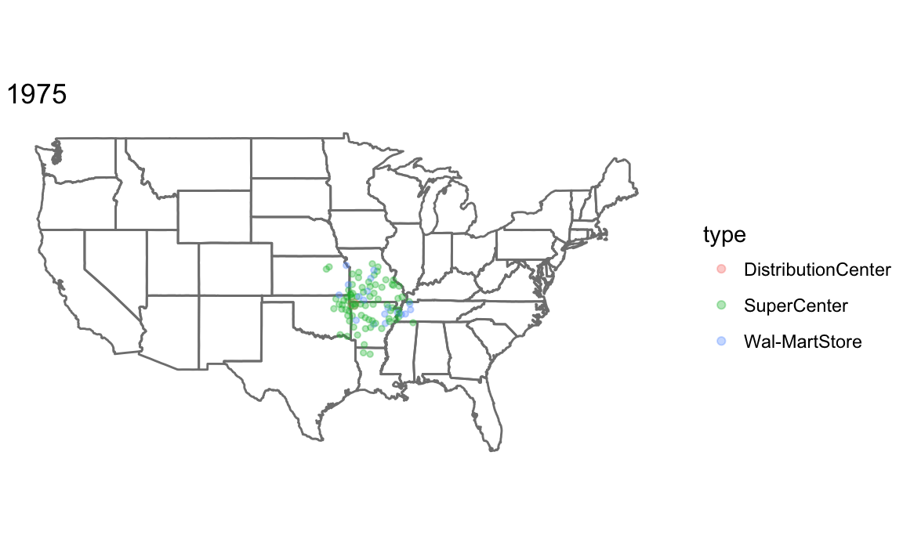
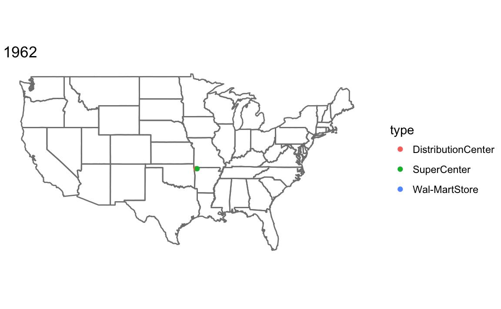

6 Discovery
The idea of tidy data and the common feature of tidyverse packages is that data should be stored in data frames with certain conventions. This works well with naturally tabular data, the type which has been common in social science applications. But there are other domains in which other data structures are more appropriate because they more naturally model the data or processes, or for computational reasons. The three applications in this chapter: text, networks, and spatial data are examples where the tidy data structure is less of an advantage. I will still rely on ggplot2 for plotting, and use tidy verse compatible packages where appropriate.
- Textual data: tidytext
- Network data: igraph for network computation, as in the chapter. But several ggplot22 extension packages for plotting the networks.
- Spatial data: ggplot2 has some built-in support for maps. The map package provides map data.
See the R for Data Science section 12.7 Non-tidy data and this post on Non-tidy data by Jeff Leek for more on non-tidy data.
6.1 Prerequisites
library("tidyverse")
library("lubridate")
library("stringr")
library("forcats")
library("modelr")6.2 Textual data
library("tm")
library("SnowballC")
library("tidytext")This section will primarily use the tidytext package. It is a relatively new package. The tm and quanteda (by Ken Benoit) packages are more established and use the document-term matrix format as described in the QSS chapter. The tidytext package stores everything in a data frame; this may be less efficient than the other packages, but has the benefit of being able to easily take advantage of the tidyverse ecosystem. If your corpus is not too large, this shouldn’t be an issue.
See Tidy Text Mining with R for a full introduction to using tidytext.
In tidy data, each row is an observation and each column is a variable. In the tidytext package, documents are stored as data frames with one-term-per-row.
Original
## load the raw corpus
corpus.raw <- Corpus(DirSource(directory = "federalist", pattern = "fp"))
corpus.raw
## make lower case
corpus.prep <- tm_map(corpus.raw, content_transformer(tolower))
## remove white space
corpus.prep <- tm_map(corpus.prep, stripWhitespace)
## remove punctuation
corpus.prep <- tm_map(corpus.prep, removePunctuation)
## remove numbers
corpus.prep <- tm_map(corpus.prep, removeNumbers)
head(stopwords("english"))
## remove stop words
corpus <- tm_map(corpus.prep, removeWords, stopwords("english"))
## finally stem remaining words
corpus <- tm_map(corpus, stemDocument)
## the output is truncated here to save space
content(corpus[[10]]) # Essay No. 10We can cast data into the tidytext format either from the Corpus object, or, after processing, from the document-term matrix object.
DIR_SOURCE <- file.path("qss", "DISCOVERY", "federalist")
corpus_raw <- Corpus(DirSource(directory = DIR_SOURCE, pattern = "fp"))
corpus_raw
#> <<VCorpus>>
#> Metadata: corpus specific: 0, document level (indexed): 0
#> Content: documents: 85Use the tidy function to convert it to a data frame with one row per document.
corpus_tidy <- tidy(corpus_raw)
corpus_tidy
#> # A tibble: 85 × 8
#> author datetimestamp description heading id language origin
#> <lgl> <dttm> <lgl> <lgl> <chr> <chr> <lgl>
#> 1 NA 2017-02-03 17:57:31 NA NA fp01.txt en NA
#> 2 NA 2017-02-03 17:57:31 NA NA fp02.txt en NA
#> 3 NA 2017-02-03 17:57:31 NA NA fp03.txt en NA
#> 4 NA 2017-02-03 17:57:31 NA NA fp04.txt en NA
#> 5 NA 2017-02-03 17:57:31 NA NA fp05.txt en NA
#> 6 NA 2017-02-03 17:57:31 NA NA fp06.txt en NA
#> # ... with 79 more rows, and 1 more variables: text <chr>The text column contains the text of the documents themselves. Since most of the metadata is irrelevant, we’ll delete those columns, keeping only the document (id) and text columns.
corpus_tidy <- select(corpus_tidy, id, text)Also, we want to extract the essay number and use that as the document id rather than its file name.
corpus_tidy <- mutate(corpus_tidy,
document = as.integer(str_extract(id, "\\d+"))) %>%
select(-id)The tokenizes the document texts.
tokens <- corpus_tidy %>%
# tokenizes into words and stems them
unnest_tokens(word, text, token = "word_stems") %>%
# remove any numbers in the strings
mutate(word = str_replace_all(word, "\\d+", "")) %>%
# drop any empty strings
filter(word != "")
tokens
#> # A tibble: 187,412 × 2
#> document word
#> <int> <chr>
#> 1 1 after
#> 2 1 an
#> 3 1 unequivoc
#> 4 1 experi
#> 5 1 of
#> 6 1 the
#> # ... with 1.874e+05 more rowsThe unnest_tokens function uses the tokenizers package to tokenize the text. By default, it uses the function which removes punctuation, and lowercases the words. I set the tokenizer to to stem the word, using the SnowballC package.
We can remove stop-words with an anti_join on the dataset stop_words
data("stop_words", package = "tidytext")
tokens <- anti_join(tokens, stop_words, by = "word")6.2.1 Document-Term Matrix
Original:
dtm <- DocumentTermMatrix(corpus)
dtm
inspect(dtm[1:5, 1:8])
dtm.mat <- as.matrix(dtm)In tokens there is one observation for each token (word) in the each document. This is almost equivalent to a document-term matrix. For a document-term matrix we need documents, and terms as the keys for the data and a column with the number of times the term appeared in the document.
dtm <- count(tokens, document, word)
head(dtm)
#> Source: local data frame [6 x 3]
#> Groups: document [1]
#>
#> document word n
#> <int> <chr> <int>
#> 1 1 abl 1
#> 2 1 absurd 1
#> 3 1 accid 1
#> 4 1 accord 1
#> 5 1 acknowledg 1
#> 6 1 act 16.2.2 Topic Discovery
Original:
library(wordcloud)
wordcloud(colnames(dtm.mat), dtm.mat[12, ], max.words = 20) # essay No. 12
wordcloud(colnames(dtm.mat), dtm.mat[24, ], max.words = 20) # essay No. 24Plot the word-clouds for essays 12 and 24:
library("wordcloud")
filter(dtm, document == 12) %>%
{wordcloud(.$word, .$n, max.words = 20)}
filter(dtm, document == 24) %>%
{wordcloud(.$word, .$n, max.words = 20)}Original:
stemCompletion(c("revenu", "commerc", "peac", "army"), corpus.prep)Original:
dtm.tfidf <- weightTfIdf(dtm) # tf-idf calculation
dtm.tfidf.mat <- as.matrix(dtm.tfidf) # convert to matrix
## 10 most important words for Paper No. 12
head(sort(dtm.tfidf.mat[12, ], decreasing = TRUE), n = 10)
## 10 most important words for Paper No. 24
head(sort(dtm.tfidf.mat[24, ], decreasing = TRUE), n = 10)tidyverse: Use the function bind_tf_idf to add a column with the tf-idf to the data frame.
dtm <- bind_tf_idf(dtm, word, document, n)
dtm
#> Source: local data frame [38,764 x 6]
#> Groups: document [85]
#>
#> document word n tf idf tf_idf
#> <int> <chr> <int> <dbl> <dbl> <dbl>
#> 1 1 abl 1 0.00176 0.705 0.001241
#> 2 1 absurd 1 0.00176 1.735 0.003054
#> 3 1 accid 1 0.00176 3.750 0.006601
#> 4 1 accord 1 0.00176 0.754 0.001327
#> 5 1 acknowledg 1 0.00176 1.552 0.002733
#> 6 1 act 1 0.00176 0.400 0.000704
#> # ... with 3.876e+04 more rowsThe 10 most important words for Paper No. 12 are
dtm %>%
filter(document == 12) %>%
top_n(10, tf_idf)
#> Source: local data frame [10 x 6]
#> Groups: document [1]
#>
#> document word n tf idf tf_idf
#> <int> <chr> <int> <dbl> <dbl> <dbl>
#> 1 12 cent 2 0.00240 4.44 0.0107
#> 2 12 coast 3 0.00360 3.75 0.0135
#> 3 12 commerc 8 0.00959 1.11 0.0107
#> 4 12 contraband 3 0.00360 4.44 0.0160
#> 5 12 excis 5 0.00600 2.65 0.0159
#> 6 12 gallon 2 0.00240 4.44 0.0107
#> # ... with 4 more rowsand for Paper No. 24,
dtm %>%
filter(document == 24) %>%
top_n(10, tf_idf)
#> Source: local data frame [10 x 6]
#> Groups: document [1]
#>
#> document word n tf idf tf_idf
#> <int> <chr> <int> <dbl> <dbl> <dbl>
#> 1 24 armi 7 0.01034 1.26 0.01308
#> 2 24 arsenal 2 0.00295 3.75 0.01108
#> 3 24 dock 3 0.00443 4.44 0.01969
#> 4 24 frontier 3 0.00443 2.83 0.01255
#> 5 24 garrison 6 0.00886 2.83 0.02511
#> 6 24 nearer 2 0.00295 3.34 0.00988
#> # ... with 4 more rowsThe slightly different results from the book are due to tokenization differences.
Original:
k <- 4 # number of clusters
## subset The Federalist papers written by Hamilton
hamilton <- c(1, 6:9, 11:13, 15:17, 21:36, 59:61, 65:85)
dtm.tfidf.hamilton <- dtm.tfidf.mat[hamilton, ]
## run k-means
km.out <- kmeans(dtm.tfidf.hamilton, centers = k)
km.out$iter # check the convergence; number of iterations may vary
## label each centroid with the corresponding term
colnames(km.out$centers) <- colnames(dtm.tfidf.hamilton)
for (i in 1:k) { # loop for each cluster
cat("CLUSTER", i, "\n")
cat("Top 10 words:\n") # 10 most important terms at the centroid
print(head(sort(km.out$centers[i, ], decreasing = TRUE), n = 10))
cat("\n")
cat("Federalist Papers classified: \n") # extract essays classified
print(rownames(dtm.tfidf.hamilton)[km.out$cluster == i])
cat("\n")
}tidyverse: Subset those documents known to have been written by Hamilton.
HAMILTON_ESSAYS <- c(1, 6:9, 11:13, 15:17, 21:36, 59:61, 65:85)
dtm_hamilton <- filter(dtm, document %in% HAMILTON_ESSAYS)The kmeans function expects the input to be rows for observations and columns for each variable: in our case that would be documents as rows, and words as columns, with the tf-idf as the cell values. We could use spread to do this, but that would be a large matrix.
CLUSTERS <- 4
km_out <-
kmeans(cast_dtm(dtm_hamilton, document, word, tf_idf), centers = CLUSTERS, nstart = 10)
km_out$iter
#> [1] 3Data frame with the unique terms used by Hamilton. I extract these from the column names of the DTM after cast_dtm to ensure that the order is the same as the k-means results.
hamilton_words <-
tibble(word = colnames(cast_dtm(dtm_hamilton, document, word, tf_idf)))The centers of the clusters is a cluster x word matrix. We want to transpose it and then append columns to hamilton_words so the location of each word in the cluster is listed.
dim(km_out$centers)
#> [1] 4 3850hamilton_words <- bind_cols(hamilton_words, as_tibble(t(km_out$centers)))
hamilton_words
#> # A tibble: 3,850 × 5
#> word `1` `2` `3` `4`
#> <chr> <dbl> <dbl> <dbl> <dbl>
#> 1 abl 0.000262 0.000000 0.001004 0.00113
#> 2 absurd 0.000272 0.001430 0.000678 0.00000
#> 3 accid 0.000000 0.000000 0.000292 0.00000
#> 4 accord 0.000319 0.001381 0.000499 0.00000
#> 5 acknowledg 0.000000 0.000767 0.000556 0.00000
#> 6 act 0.000927 0.000838 0.000657 0.00000
#> # ... with 3,844 more rowsTo find the top 10 words in each centroid, we use top_n with group_by:
top_words_cluster <-
gather(hamilton_words, cluster, value, -word) %>%
group_by(cluster) %>%
top_n(10, value)We can print them out using a for loop
for (i in 1:CLUSTERS) {
cat("CLUSTER ", i, ": ",
str_c(filter(top_words_cluster, cluster == i)$word, collapse = ", "),
"\n\n")
}
#> CLUSTER 1 : offic, accus, presid, treati, appoint, senat, nomin, governor, impeach, pardon
#>
#> CLUSTER 2 : court, appeal, jurisdict, inferior, suprem, trial, tribun, cogniz, juri, appel
#>
#> CLUSTER 3 : confederaci, tax, war, land, revenu, armi, militari, militia, taxat, claus
#>
#> CLUSTER 4 : presid, appoint, senat, claus, expir, fill, recess, session, unfound, vacancThis is alternative code that prints out a table:
gather(hamilton_words, cluster, value, -word) %>%
group_by(cluster) %>%
top_n(10, value) %>%
summarise(top_words = str_c(word, collapse = ", ")) %>%
knitr::kable()| cluster | top_words |
|---|---|
| 1 | offic, accus, presid, treati, appoint, senat, nomin, governor, impeach, pardon |
| 2 | court, appeal, jurisdict, inferior, suprem, trial, tribun, cogniz, juri, appel |
| 3 | confederaci, tax, war, land, revenu, armi, militari, militia, taxat, claus |
| 4 | presid, appoint, senat, claus, expir, fill, recess, session, unfound, vacanc |
Or to print out the documents in each cluster,
enframe(km_out$cluster, "document", "cluster") %>%
group_by(cluster) %>%
summarise(documents = str_c(document, collapse = ", ")) %>%
knitr::kable()| cluster | documents |
|---|---|
| 1 | 65, 66, 68, 69, 74, 75, 76, 77, 79 |
| 2 | 81, 82, 83 |
| 3 | 1, 6, 7, 8, 9, 11, 12, 13, 15, 16, 17, 21, 22, 23, 24, 25, 26, 27, 28, 29, 30, 31, 32, 33, 34, 35, 36, 59, 60, 61, 70, 71, 72, 73, 78, 80, 84, 85 |
| 4 | 67 |
6.2.4 Cross-Validation
Original:
## proportion of correctly classified essays by Hamilton
mean(hm.fitted[author.data$author == 1] > 0)
## proportion of correctly classified essays by Madison
mean(hm.fitted[author.data$author == -1] < 0)tidyverse: For cross-validation, I rely on the modelr package function RDoc("modelr::crossv_kfold"). See the tutorial Cross validation of linear regression with modelr for more on using modelr for cross validation or k-fold cross-validation with modelr and broom.
In sample, this regression perfectly predicts the authorship of the documents with known authors.
author_data %>%
filter(!is.na(author)) %>%
group_by(author) %>%
summarise(`Proportion Correct` = mean(author == pred_author))
#> # A tibble: 2 × 2
#> author `Proportion Correct`
#> <chr> <dbl>
#> 1 Hamilton 1
#> 2 Madison 1Create the cross-validation data-sets using . As in the chapter, I will use a leave-one-out cross-validation, which is a k-fold crossvalidation where k is the number of observations. To simplify this, I define the crossv_loo function that runs crossv_kfold with k = nrow(data).
crossv_loo <- function(data, id = ".id") {
crossv_kfold(data, k = nrow(data), id = id)
}
# leave one out cross-validation object
cv <- author_data %>%
filter(!is.na(author)) %>%
crossv_loo()Now estimate the model for each training dataset
models <- purrr::map(cv$train, ~ lm(author2 ~ upon + there + consequently + whilst,
data = ., model = FALSE))Note that I use purrr::map to ensure that the correct map() function is used since the maps package also defines a map.
Now calculate the test performance on the held out observation,
test <- map2_df(models, cv$test,
function(mod, test) {
add_predictions(as.data.frame(test), mod) %>%
mutate(pred_author =
if_else(pred >= 0, "Hamilton", "Madison"),
correct = (pred_author == author))
})
test %>%
group_by(author) %>%
summarise(mean(correct))
#> # A tibble: 2 × 2
#> author `mean(correct)`
#> <chr> <dbl>
#> 1 Hamilton 1.000
#> 2 Madison 0.786Original:
n <- nrow(author.data)
hm.classify <- rep(NA, n) # a container vector with missing values
for (i in 1:n) {
## fit the model to the data after removing the ith observation
sub.fit <- lm(author ~ upon + there + consequently + whilst,
data = author.data[-i, ]) # exclude ith row
## predict the authorship for the ith observation
hm.classify[i] <- predict(sub.fit, newdata = author.data[i, ])
}
## proportion of correctly classified essays by Hamilton
mean(hm.classify[author.data$author == 1] > 0)
## proportion of correctly classified essays by Madison
mean(hm.classify[author.data$author == -1] < 0)Original:
disputed <- c(49, 50:57, 62, 63) # 11 essays with disputed authorship
tf.disputed <- as.data.frame(tfm[disputed, ])
## prediction of disputed authorship
pred <- predict(hm.fit, newdata = tf.disputed)
pred # predicted valuestidyverse: When adding prediction with add_predictions it added predictions for missing values as well.
Table of authorship of disputed papers
author_data %>%
filter(is.na(author)) %>%
select(document, pred, pred_author) %>%
knitr::kable()| document | pred | pred_author |
|---|---|---|
| 18 | -0.359 | Madison |
| 19 | -0.586 | Madison |
| 20 | -0.055 | Madison |
| 49 | -0.966 | Madison |
| 50 | -0.002 | Madison |
| 51 | -1.522 | Madison |
| 52 | -0.195 | Madison |
| 53 | -0.506 | Madison |
| 54 | -0.520 | Madison |
| 55 | 0.094 | Hamilton |
| 56 | -0.550 | Madison |
| 57 | -1.219 | Madison |
| 62 | -0.944 | Madison |
| 63 | -0.184 | Madison |
par(cex = 1.25)
## fitted values for essays authored by Hamilton; red squares
plot(hamilton, hm.fitted[author.data$author == 1], pch = 15,
xlim = c(1, 85), ylim = c(-2, 2), col = "red",
xlab = "Federalist Papers", ylab = "Predicted values")
abline(h = 0, lty = "dashed")
## essays authored by Madison; blue circles
points(madison, hm.fitted[author.data$author == -1],
pch = 16, col = "blue")
## disputed authorship; black triangles
points(disputed, pred, pch = 17) disputed_essays <- filter(author_data, is.na(author))$document
ggplot(mutate(author_data,
author = fct_explicit_na(factor(author), "Disputed")),
aes(y = document, x = pred, colour = author, shape = author)) +
geom_ref_line(v = 0) +
geom_point() +
scale_y_continuous(breaks = seq(10, 80, by = 10),
minor_breaks = seq(5, 80, by = 5)) +
scale_color_manual(values = c("Madison" = "blue",
"Hamilton" = "red",
"Disputed" = "black")) +
scale_shape_manual(values = c("Madison" = 16, "Hamilton" = 15,
"Disputed" = 17)) +
labs(colour = "Author", shape = "Author",
y = "Federalist Papers", x = "Predicted values")
6.3 Network Data
Network data is area for which the tidyverse is not well suited. The igraph, sna, and network packages are the best in class. See the Social Network Analysis section of the Social Sciences Task View. See this tutorial by Katherin Ognyanova, Static and dynamic nework visualization with R, for a good overview of network visualization with those packages in R.
There are several packages that plot networks in ggplot2.
- ggnetwork
- ggraph
- geomnet
- GGally functions ggnet,
ggnet2, andggnetworkmap. - ggCompNet compares the speed of various network plotting packages in R.
See this presentation for an overview of some of those packages for data visualization.
Examples: Network Visualization Examples with the ggplot2 Package
library("igraph")
library("intergraph")
library("GGally")6.3.1 Twitter Following Network
Original:
twitter <- read.csv("twitter-following.csv")
senator <- read.csv("twitter-senator.csv")tidyverse:
twitter <- read_csv(qss_data_url("discovery", "twitter-following.csv"))
senator <- read_csv(qss_data_url("discovery", "twitter-senator.csv"))Original:
n <- nrow(senator) # number of senators
## initialize adjacency matrix
twitter.adj <- matrix(0, nrow = n, ncol = n)
## assign screen names to rows and columns
colnames(twitter.adj) <- rownames(twitter.adj) <- senator$screen_name
## change `0' to `1' when edge goes from node `i' to node `j'
for (i in 1:nrow(twitter)) {
twitter.adj[twitter$following[i], twitter$followed[i]] <- 1
}
twitter.adj <- graph.adjacency(twitter.adj, mode = "directed", diag = FALSE)tidyverse: Simply use the function since twitter consists of edges (a link from a senator to another). SInce graph_from_edgelist expects a matrix, convert the data frame to a matrix using .
twitter_adj <- graph_from_edgelist(as.matrix(twitter))original:
senator$indegree <- degree(twitter.adj, mode = "in")
senator$outdegree <- degree(twitter.adj, mode = "out")
in.order <- order(senator$indegree, decreasing = TRUE)
out.order <- order(senator$outdegree, decreasing = TRUE)
## 3 greatest indegree
senator[in.order[1:3], ]
## 3 greatest outdegree
senator[out.order[1:3], ]environment(degree)
#> <environment: namespace:sna>tidyverse: Add in- and out-degree varibles to the senator data frame:
senator <-
mutate(senator,
indegree = igraph::degree(twitter_adj, mode = "in"),
outdegree = igraph::degree(twitter_adj, mode = "out"))Now find the senators with the 3 greatest in-degrees
arrange(senator, desc(indegree)) %>%
slice(1:3) %>%
select(name, party, state, indegree, outdegree)
#> # A tibble: 3 × 5
#> name party state indegree outdegree
#> <chr> <chr> <chr> <dbl> <dbl>
#> 1 Tom Cotton R AR 64 15
#> 2 Richard J. Durbin D IL 60 87
#> 3 John Barrasso R WY 58 79or using the function:
top_n(senator, 3, indegree) %>%
arrange(desc(indegree)) %>%
select(name, party, state, indegree, outdegree)
#> # A tibble: 5 × 5
#> name party state indegree outdegree
#> <chr> <chr> <chr> <dbl> <dbl>
#> 1 Tom Cotton R AR 64 15
#> 2 Richard J. Durbin D IL 60 87
#> 3 John Barrasso R WY 58 79
#> 4 Joe Donnelly D IN 58 9
#> 5 Orrin G. Hatch R UT 58 50The top_n function catches that three senators are tied for 3rd highest outdegree, whereas the simply sorting and slicing cannot.
And we can find the senators with the three highest out-degrees similarly,
top_n(senator, 3, outdegree) %>%
arrange(desc(outdegree)) %>%
select(name, party, state, indegree, outdegree)
#> # A tibble: 4 × 5
#> name party state indegree outdegree
#> <chr> <chr> <chr> <dbl> <dbl>
#> 1 Thad Cochran R MS 55 89
#> 2 Steve Daines R MT 30 88
#> 3 John McCain R AZ 41 88
#> 4 Joe Manchin, III D WV 43 88original:
n <- nrow(senator)
## color: Democrats = `blue', Republicans = `red', Independent = `black'
col <- rep("red", n)
col[senator$party == "D"] <- "blue"
col[senator$party == "I"] <- "black"
## pch: Democrats = circle, Republicans = diamond, Independent = cross
pch <- rep(16, n)
pch[senator$party == "D"] <- 17
pch[senator$party == "I"] <- 4
par(cex = 1.25)
## plot for comparing two closeness measures (incoming vs. outgoing)
plot(closeness(twitter.adj, mode = "in"),
closeness(twitter.adj, mode = "out"), pch = pch, col = col,
main = "Closeness", xlab = "Incoming path", ylab = "Outgoing path")
## plot for comparing directed and undirected betweenness
plot(betweenness(twitter.adj, directed = TRUE),
betweenness(twitter.adj, directed = FALSE), pch = pch, col = col,
main = "Betweenness", xlab = "Directed", ylab = "Undirected")tidyverse
# Define scales to reuse for the plots
scale_colour_parties <- scale_colour_manual("Party", values = c(R = "red",
D = "blue",
I = "green"))
scale_shape_parties <- scale_shape_manual("Party", values = c(R = 16,
D = 17,
I = 4))
senator %>%
mutate(closeness_in = igraph::closeness(twitter_adj, mode = "in"),
closeness_out = igraph::closeness(twitter_adj, mode = "out")) %>%
ggplot(aes(x = closeness_in, y = closeness_out,
colour = party, shape = party)) +
geom_abline(intercept = 0, slope = 1, colour = "white", size = 2) +
geom_point() +
scale_colour_parties +
scale_shape_parties +
labs(main = "Closeness", x = "Incoming path", y = "Outgoing path")
What does the reference line indicate? What does that say about senators twitter networks?
senator %>%
mutate(betweenness_dir = igraph::betweenness(twitter_adj, directed = TRUE),
betweenness_undir = igraph::betweenness(twitter_adj, directed = FALSE)) %>%
ggplot(aes(x = betweenness_dir, y = betweenness_undir, colour = party,
shape = party)) +
geom_abline(intercept = 0, slope = 1, colour = "white", size = 2) +
geom_point() +
scale_colour_parties +
scale_shape_parties +
labs(main = "Betweenness", x = "Directed", y = "Undirected")
We’ve covered three different methods of calculating the importance of a node in a network: degree, closeness, and centrality. But what do they mean? What’s the “best” measure of importance? The answer to the the former is “it depends on the question”. There are probably other papers out there on this, but Borgatti (2005) is a good discussion:
Borgatti, Stephen. 2005. “Centrality and Network Flow”. Social Networks. DOI
Original:
senator$pagerank <- page.rank(twitter.adj)$vector
par(cex = 1.25)
## `col' parameter is defined earlier
plot(twitter.adj, vertex.size = senator$pagerank * 1000,
vertex.color = col, vertex.label = NA,
edge.arrow.size = 0.1, edge.width = 0.5)Add and plot page-rank:
senator <- mutate(senator, page_rank = page_rank(twitter_adj)[["vector"]])
ggnet(twitter_adj, mode = "target")
6.4 Spatial Data in R
Some resources on plotting spatial data in R:
ggplot2 has several map-related functions
- borders
- fortify.map
ggmap allows ggplot to us a map from Google Maps, OpenStreet Maps or similar as a background for the plot.
- David Kahle and Hadley Wickham. 2013. ggmap: Spatial Visualization with ggplot2. Journal of Statistical Software
Github dkahle/ggmamp
- tmap is not built on ggplot2 but uses a ggplot2-like API for network data.
leaflet is an R interface to a popular javascript mapping library.
Here are few tutorials on plotting spatial data in ggplot2:
library("ggrepel")data("us.cities", package = "maps")
glimpse(us.cities)
#> Observations: 1,005
#> Variables: 6
#> $ name <chr> "Abilene TX", "Akron OH", "Alameda CA", "Albany GA...
#> $ country.etc <chr> "TX", "OH", "CA", "GA", "NY", "OR", "NM", "LA", "V...
#> $ pop <int> 113888, 206634, 70069, 75510, 93576, 45535, 494962...
#> $ lat <dbl> 32.5, 41.1, 37.8, 31.6, 42.7, 44.6, 35.1, 31.3, 38...
#> $ long <dbl> -99.7, -81.5, -122.3, -84.2, -73.8, -123.1, -106.6...
#> $ capital <int> 0, 0, 0, 0, 2, 0, 0, 0, 0, 0, 0, 0, 0, 0, 0, 0, 0,...usa_map <- map_data("usa")
capitals <- filter(us.cities,
capital == 2,
!country.etc %in% c("HI", "AK"))
ggplot() +
geom_map(map = usa_map) +
borders(database = "usa") +
geom_point(aes(x = long, y = lat, size = pop),
data = capitals) +
# scale size area ensures: 0 = no area
scale_size_area() +
coord_quickmap() +
theme_void() +
labs(x = "", y = "", title = "US State Capitals",
size = "Population")
cal_cities <- filter(us.cities, country.etc == "CA") %>%
top_n(7, pop)
ggplot() +
borders(database = "state", regions = "California") +
geom_point(aes(x = long, y = lat), data = cal_cities) +
geom_text_repel(aes(x = long, y = lat, label = name), data = cal_cities) +
coord_quickmap() +
theme_minimal() +
labs(x = "", y = "")
6.4.1 Colors in R
For more resources on using colors in R
R4DSchapter Graphics for Communication- ggplot2 book Chapter “Scales”
- Jenny Bryan Using colors in R
- Achim Zeileis, Kurt Hornik, Paul Murrell (2009). Escaping RGBland: Selecting Colors for Statistical Graphics. Computational Statistics & Data Analysis DOI
- colorspace vignette
- Maureen Stone Choosing Colors for Data Visualization
- ColorBrewer A website with a variety of palettes, primarily designed for maps, but also useful in data viz.
- Stephen Few Practical Rules for Using Color in Charts
- Why Should Engineers and Scientists by Worried About Color?
- A Better Default Colormap for Matplotlib A SciPy 2015 talk that describes how the viridis was created.
- Evaluation of Artery Visualizations for Heart Disease Diagnosis Using the wrong color scale can be deadly … literally.
- The python package matplotlib has a good discussion of colormaps.
- Peter Kovesi Good Color Maps: How to Design Them.
- See the viridis, ggthemes, dichromat, and pals packages for color palettes.
Use scale_identity for the color and alpha scales since the values of the variables are the values of the scale itself (the color names, and the alpha values).
ggplot(tibble(x = rep(1:4, each = 2),
y = x + rep(c(0, 0.2), times = 2),
colour = rep(c("black", "red"), each = 4),
alpha = c(1, 1, 0.5, 0.5, 1, 1, 0.5, 0.5)),
aes(x = x, y = y, colour = colour, alpha = alpha)) +
geom_point(size = 15) +
scale_color_identity() +
scale_alpha_identity() +
theme_bw() +
theme(panel.grid = element_blank())
6.4.2 United States Presidential Elections
Original:
pres08 <- read.csv("pres08.csv")
## two-party vote share
pres08$Dem <- pres08$Obama / (pres08$Obama + pres08$McCain)
pres08$Rep <- pres08$McCain / (pres08$Obama + pres08$McCain) ## color for California
cal.color <- rgb(red = pres08$Rep[pres08$state == "CA"],
blue = pres08$Dem[pres08$state == "CA"],
green = 0)tidyverse:
pres08 <- read_csv(qss_data_url("discovery", "pres08.csv")) %>%
mutate(Dem = Obama / (Obama + McCain),
Rep = McCain / (Obama + McCain))Original:
## California as a blue state
map(database = "state", regions = "California", col = "blue",
fill = TRUE)
## California as a purple state
map(database = "state", regions = "California", col = cal.color,
fill = TRUE)tidyverse:
ggplot() +
borders(database = "state", regions = "California", fill = "blue") +
coord_quickmap() +
theme_void() 
cal_color <- filter(pres08, state == "CA") %>%
{rgb(red = .$Rep, green = 0, blue = .$Dem)}
ggplot() +
borders(database = "state", regions = "California", fill = cal_color) +
coord_quickmap() +
theme_void()
# America as red and blue states
map(database = "state") # create a map
for (i in 1:nrow(pres08)) {
if ((pres08$state[i] != "HI") & (pres08$state[i] != "AK") &
(pres08$state[i] != "DC")) {
map(database = "state", regions = pres08$state.name[i],
col = ifelse(pres08$Rep[i] > pres08$Dem[i], "red", "blue"),
fill = TRUE, add = TRUE)
}
}
## America as purple states
map(database = "state") # create a map
for (i in 1:nrow(pres08)) {
if ((pres08$state[i] != "HI") & (pres08$state[i] != "AK") &
(pres08$state[i] != "DC")) {
map(database = "state", regions = pres08$state.name[i],
col = rgb(red = pres08$Rep[i], blue = pres08$Dem[i],
green = 0), fill = TRUE, add = TRUE)
}
} states <- map_data("state") %>%
left_join(mutate(pres08, state.name = str_to_lower(state.name)),
by = c("region" = "state.name")) %>%
# drops DC
filter(!is.na(EV)) %>%
mutate(party = if_else(Dem > Rep, "Dem", "Rep"),
color = map2_chr(Dem, Rep, ~ rgb(blue = .x, red = .y, green = 0)))
ggplot(states) +
geom_polygon(aes(group = group, x = long, y = lat,
fill = party)) +
coord_quickmap() +
scale_fill_manual(values = c("Rep" = "red", "Dem" = "blue")) +
theme_void() +
labs(x = "", y = "")
For plotting the purple states, I use since the color column contains the RGB values to use in the plot:
ggplot(states) +
geom_polygon(aes(group = group, x = long, y = lat,
fill = color)) +
coord_quickmap() +
scale_fill_identity() +
theme_void() +
labs(x = "", y = "")
However, plotting purple states is not a good data visualization. Even though the colors are a proportional mixture of red and blue, human visual perception doesn’t work that way.
The proportion of the democratic vote is best thought of a diverging scale with 0.5 is midpoint. And since the Democratic Party is associated with the color blue and the Republican Party is associated with the color red. The Color Brewer palette RdBu is an example:
ggplot(states) +
geom_polygon(aes(group = group, x = long, y = lat, fill = Dem)) +
scale_fill_distiller("% Obama", direction = 1, limits = c(0, 1), type = "div", palette = "RdBu") +
coord_quickmap() +
theme_void() +
labs(x = "", y = "")
6.4.3 Expansion of Walmart
Original:
walmart <- read.csv("walmart.csv")
## red = WalMartStore, blue = SuperCenter, green = DistributionCenter
walmart$storecolors <- NA # create an empty vector
walmart$storecolors[walmart$type == "Wal-MartStore"] <-
rgb(red = 1, green = 0, blue = 0, alpha = 1/3)
walmart$storecolors[walmart$type == "SuperCenter"] <-
rgb(red = 0, green = 0, blue = 1, alpha = 1/3)
walmart$storecolors[walmart$type == "DistributionCenter"] <-
rgb(red = 0, green = 1, blue = 0, alpha = 1/3)
## larger circles for DistributionCenter
walmart$storesize <- ifelse(walmart$type == "DistributionCenter", 1, 0.5)tidyverse: We don’t need to do the direct mapping since
walmart <- read_csv(qss_data_url("discovery", "walmart.csv"))
ggplot() +
borders(database = "state") +
geom_point(aes(x = long, y = lat, colour = type, size = size),
data = mutate(walmart,
size = if_else(type == "DistributionCenter", 2, 1)), alpha = 1 / 3) +
coord_quickmap() +
scale_size_identity() +
guides(color = guide_legend(override.aes = list(alpha = 1))) +
theme_void() We don’t need to worry about colors since ggplot handles that. I use guides to so that the colors or not transparent in the legend (see R for Data Science chapterGraphics for communication).
To make a plot showing all Walmart stores opened up through that year, I write a function, that takes the year and dataset as parameters.
Since I am calling the function for its side effect (printing the plot) rather than the value it returns, I use the walk function rather than map. See R for Data Science, Chapter 21.8: Walk for more information.
map_walmart <- function(year, .data) {
.data <- filter(.data, opendate < make_date(year, 1, 1)) %>%
mutate(size = if_else(type == "DistributionCenter", 2, 1))
ggplot() +
borders(database = "state") +
geom_point(aes(x = long, y = lat, colour = type, size = size),
data = .data, alpha = 1 / 3) +
coord_quickmap() +
scale_size_identity() +
guides(color = guide_legend(override.aes = list(alpha = 1))) +
theme_void() +
ggtitle(year)
}
years <- c(1975, 1985, 1995, 2005)
walk(years, ~ print(map_walmart(.x, walmart)))


6.4.4 Animation in R
For easy animation with ggplot2, use the gganimate package. Note that the gganimate package is not on CRAN, so you have to install it with the devtools package:
install.packages("cowplot")
devtools::install_github("dgrtwo/animate")library("gganimate")An animation is a series of frames. The gganimate package works by adding a frame aesthetic to ggplots, and function will animate the plot.
I use frame = year(opendate) to have the animation use each year as a frame, and cumulative = TRUE so that the previous years are shown.
walmart_animated <-
ggplot() +
borders(database = "state") +
geom_point(aes(x = long, y = lat,
colour = type,
fill = type,
frame = year(opendate),
cumulative = TRUE),
data = walmart) +
coord_quickmap() +
theme_void()
gganimate(walmart_animated)
unnamed-chunk-84